Overview
This document will guide you though the process of setting up StealthINTERCEPT policies to detect and block password change events that may occur when an attempt to exploit ZeroLogon is successful.
Who will this help?
This will help customers who have domain controllers which have not yet applied the patches by Microsoft or have specific known exclusions which allow vulnerable netlogon connections.
The ZeroLogon Detection Policy
StealthINTERCEPT can be used for detection for the actual exploit running and resetting the password of a Domain Controller where the source host is not another domain controller. This can be done by setting up a policy for Active Directory Changes with the following settings:
- AD Event: Object Modified
- AD Context: Domain Controllers container with 'Sub Tree' selected (include)
- AD Classes: computer (include)
- AD Attributes: unicodePwd (include)
- Hosts (from): all domain controllers (exclude).
Here are some step by step instructions on setting up the StealthINTERCEPT ZeroLogon Detection policy for Active Directory Changes.
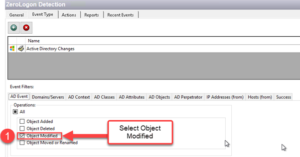
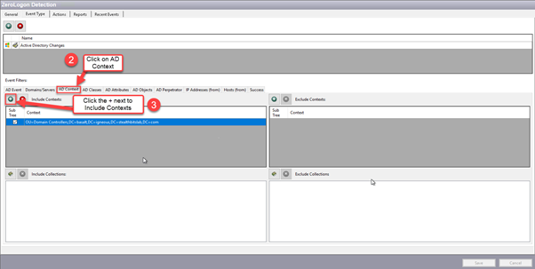
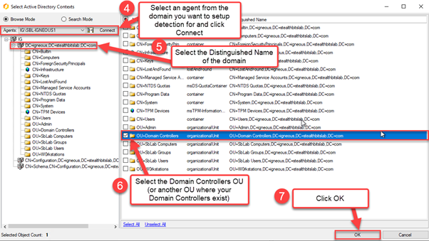
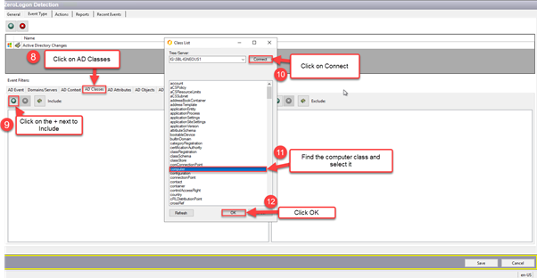
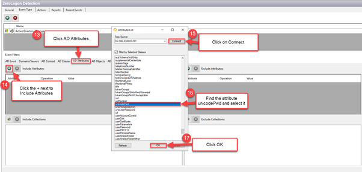
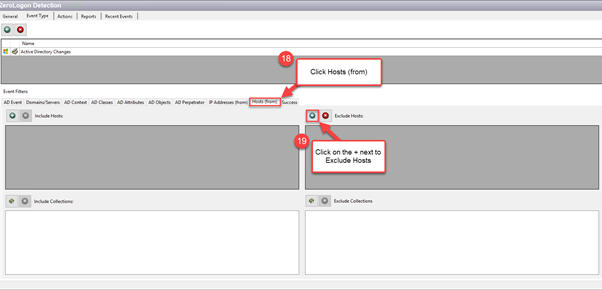
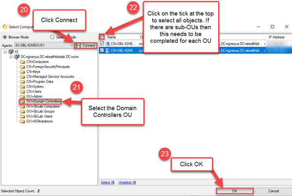
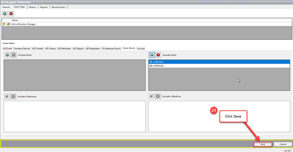
The ZeroLogon Lockdown Policy
You can also setup an Active Directory Lockdown policy in StealthINTERCEPT but this requires you and your team to be fully on top of it whenever new domain controllers are added. Here is what the settings look like,
- AD Event: Object Modified
- AD Objects and Containers: Domain Controllers container with 'Sub Tree' selected (block)
- AD Classes: computer (block)
- AD Attributes: unicodePwd (block)
- Hosts (from): all domain controllers (allow).
Important: The list of domain controllers, Hosts (from), is maintained manually. If domain controllers are added or removed from the environment this list MUST be updated. Any domain controller not on this list may encounter problems, including an inability to replicate from the domain.
To prevent the possibility of one compromised domain being used to compromise another trusted domain, we recommend deploying policies per domain so the list of domain allowed domain controllers for each domain is limited to the domain controllers in that domain.
Here are some step by step instructions on setting up the StealthINTERCEPT ZeroLogon Lockdown policy for Active Directory Changes.
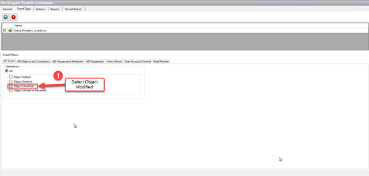
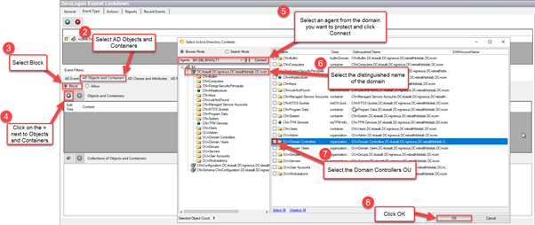
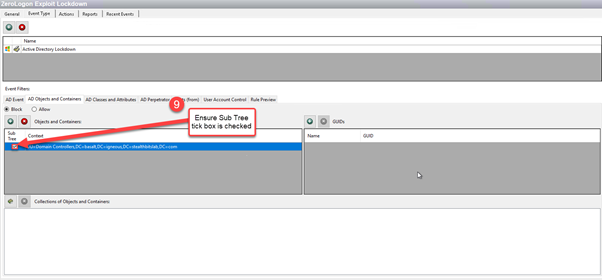
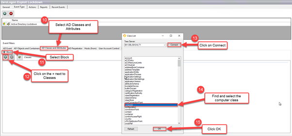
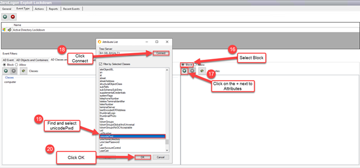
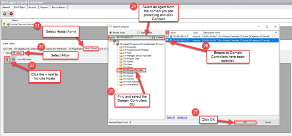
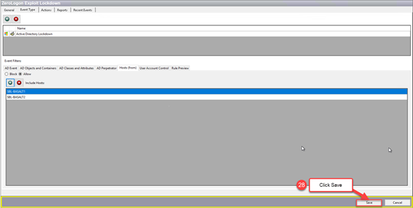